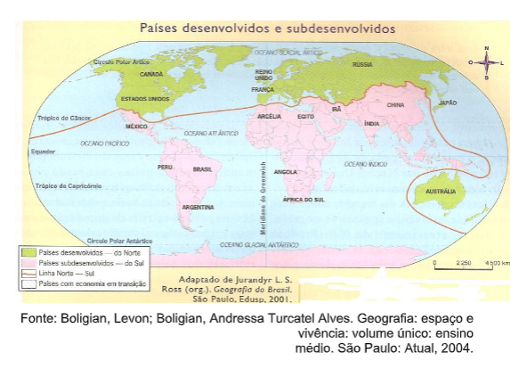
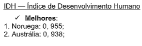
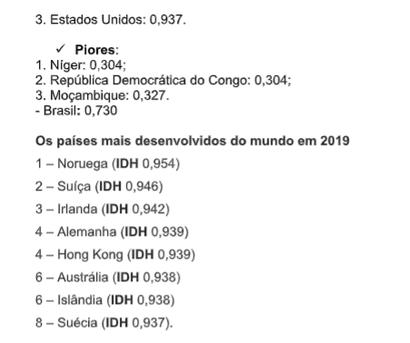
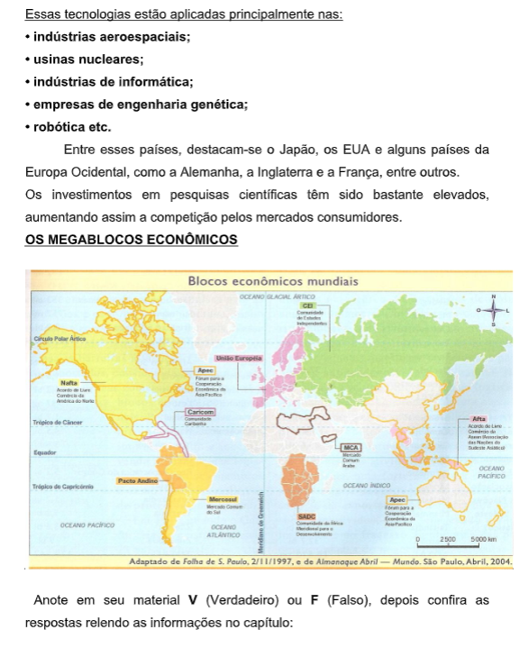
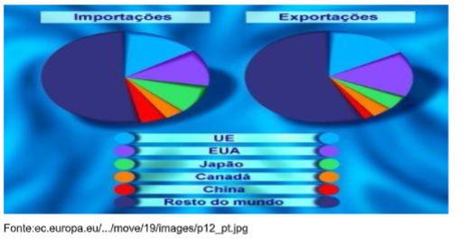

Capítulo 2: A relação da sociedade com o Lugar e a Paisagem
Questão:De que maneira a ação humana pode transformar a paisagem?
Contextualizando – Construção Civil e a Transformação da PaisagemAo longo de todo o capítulo, você perceberá a presença de imagens e textos que demonstram como as construções modificam a paisagem e transformam as relações entre a humanidade e o espaço geográfico. Bons Estudos!


Quais dessas imagens lhe remete a um ambiente familiar? Você se identifica com alguma delas? Quais delas você considera uma paisagem?
Lugar e identidadeAlgumas das imagens lhe remeteu um sentimento de identidade? Um sentimento bom ou até mesmo ruim? Se sua resposta for sim, o espaço retratado representa um lugar para você. O conceito de lugar é um dos mais importantes para a Geografia. Visto que entende-se lugar como sendo aquele espaço geográfico que possui significados, aquela porção do espaço geográfico com a qual temos uma identidade. Os diferentes povos criam laços distintos com o espaço geográfico que os rodeia.
Em Três Coroas a construção do templo modificou o espaço geográfico e criou um lugar de identidade para os budistas.
O bairro IAPI foi criado para disponibilizar imóveis para os trabalhadores da indústria de Porto Alegre. Sua construção modificou significativamente o espaço da cidade, tornando esta área um lugar de identidade para muitas pessoas.
Você já pensou sobre isso também?Pense em sua trajetória de vida. Escolha um lugar e descreva-o em seu material de anotação, lembrando dos sons, cheiros e sensações que este espaço remete para você.
Paisagens: tudo que a vista alcançaVocê diria que todas as imagens vistas anteriormente referem-se a paisagens?
A paisagem é um dos conceitos da Geografia, sendo considerada a soma das relações das sociedades com o espaço natural. Ao observarmos uma paisagem podemos visualizar as relações sociais que ali existem, desta forma cada observador verá uma paisagem diferente, pois selecionamos as imagens de acordo com a nossa vivência, com nossa cultura.
Ação e Reflexão
A partir da observação da imagem acima, descreva os elementos que compõem a paisagem, enfatizando a relação que a sociedade estabelece com o meio. Registre em seus materiais o elemento que mais chama sua atenção.
Vamos pensar um pouco no conceito de paisagem: “a paisagem não é a simples adição de elementos geográficos disparatados. É uma determinada porção do espaço, resultado da combinação dinâmica, portanto instável, de elementos físicos, biológicos e antrópicos que, reagindo dialeticamente uns sobre os outros, fazem da paisagem um conjunto único e indissociável, em perpétua evolução”. (Georges Bertrand)
Quando analisamos uma paisagem podemos perceber a dinâmica da sociedade que ali interage. Podemos ver características econômicas, políticas e culturais que tornam evidente a sociedade que ocupa e transforma aquela paisagem.
Também podemos ver o passar do tempo ao observarmos as paisagens. Algumas sociedades irão preservar estruturas arquitetônicas e culturais que estarão mesclados com elementos da natureza e elementos atuais, como nas imagens da Prefeitura de Porto Alegre e na Travessa dos Venezianos.
Assim podemos perceber que as paisagens possuem tanto elementos da natureza, quanto elementos culturais.
Classificamos as paisagens em Naturais e Culturais ou Transformadas.
Paisagens Naturais: são aquelas que praticamente não foram alteradas pelas sociedades. Um espaço de floresta com animais, rios e cascatas forma uma paisagem natural.
Paisagens Culturais ou Transformadas: correspondem ao espaço modificado pelas sociedades. Uma cidade com seus prédios, pontes, rodovias, barulhos e cheiros, forma uma paisagem cultural.